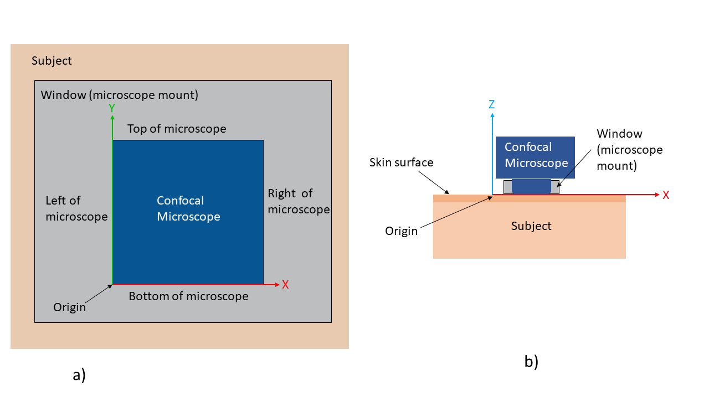

| DICOM PS3.3 - Information Object Definitions |
|---|
The table in this Section contains Attributes that describe Slide Coordinates. Slide Coordinates provide a means to locate an image within a given Frame of Reference.
A Frame of Reference (identified by a Frame of Reference UID) typically only applies to a single mounting of a slide on a particular microscope stage; there is no guarantee that a subsequent mounting of the slide, even on the same equipment, will allow reproducible positioning to the exact same location. These Attributes allow consistent location of multiple images within the Series of a single Frame of Reference.
There is no a priori correspondence of pixels to Slide Coordinates. Therefore, the geometrical symmetry point through the pixel plane of the digital microscope may not correspond to the center of a pixel. The geometrical symmetry point could be between pixels.
This Module formerly included a Type 3 Attribute Pixel Spacing Sequence (0040,08D8), and subsidiary Attributes; see PS3.3-2009. Pixel Spacing is an Attribute of the image acquisition, not the slide coordinates, and is inappropriate for this Module. It is now conveyed by Pixel Spacing (0028,0030) in the VL Image Module or the Pixel Measures Functional Group (see Section C.7.6.16.2.1).
Table C.8-78. Slide Coordinates Module Attributes
|
The coordinates of the center point of the Image in the Slide Coordinate System Frame of Reference. Zero or one Item shall be included in this Sequence. See Section C.8.12.2.1.1 for further explanation. |
|||
|
The X offset in millimeters from the Origin of the Slide Coordinate System. See Figure C.8-16. |
|||
|
The Y offset in millimeters from the Origin of the Slide Coordinate System. See Figure C.8-16. |
|||
|
The Z offset in µm from the image substrate reference plane (i.e., utilized surface of a glass slide). NoteThe use of units of microns is inconsistent with the use of millimeters for Point Coordinates Data (0066,0016), Double Point Coordinates Data (0066,0022) and Common Z Coordinate Value (006A,0010) in the Section C.37.1.2 Microscopy Bulk Simple Annotations Module. |
This Section defines the Slide Coordinate System and specifies the Attributes that shall be used to describe the location of the center point of the Image pixel plane (as captured through a microscope) in the Slide Coordinate System Frame of Reference.
In Slide Microscopy (SM), the Microscope is equipped with a moveable Stage and position sensors that enable storage of the location of the center point of the displayed image with respect to the examined Specimen.
The Stage is the part of the Microscope to which the Slide is attached for viewing. The Objective Lens is the lens that is closest to the Specimen. The Top Surface of the Slide is the surface of the Slide on which the Specimen is mounted. The Bottom Surface of the Slide is the opposite surface. This Specification presumes that: 1) the Slide is rectangular; 2) the Top Surface of the Slide is oriented toward the Objective Lens of the Microscope; and 3) the Bottom Surface of the Slide is in perfect contact with the Microscope Stage when the Slide is attached to the Stage for viewing.
Figure C.8-16 and Figure C.8-16b depict the Top Surface of the Slide on the Microscope Stage from the perspective of the Objective Lens. This is Reference Slide Orientation. The X, Y, and Z axes of the Slide Coordinate System in Reference Slide Orientation are defined as follows. The Y-axis is a line that nominally represents the Left Edge of the Slide. The X-axis is a line that is orthogonal to the Y-axis and nominally represents the Specimen Edge of the Slide. The Z-axis is a line that passes through the intersection of the X-axis and Y-axis and is orthogonal to the Microscope Stage. The Origin (0,0,0) of the Slide Coordinate System is the point of intersection of the X, Y, and Z axes.
An improperly-placed coverslip or Specimen that overlaps an Edge of a Slide is not considered part of the Edge a Slide for purposes of defining the Slide Coordinate System. However, such objects may cause inaccurate positioning of the Slide on the Stage.
If the Left Edge and Specimen Edge of the Slide are not orthogonal (e.g., the Slide is damaged or defective or the Specimen Edge is curvilinear), then the lower left-hand corner of the Slide may not be located at the Origin.
The definitions of X, Y, and Z axes are the same for inverted microscopes, with the Top Surface of the slide (i.e., Specimen side of the Slide) still being closest to the Objective Lens.
The origin of a Frame of Reference is arbitrary (see Section C.7.4.1), but its nominal location for consistency of slide coordinates is defined in this section.
Figure C.8-17 depicts the Z-axis center point location. The X Offset in Slide Coordinate System (0040,072A) shall increase from the Origin toward the Right Edge in Reference Slide Orientation. The Y Offset in Slide Coordinate System (0040,073A) shall increase from the Origin toward the Label Edge or Top Edge (in the absence of a label) in Reference Slide Orientation. The Z Offset in Slide Coordinate System (0040,074A) shall be nominally referenced as zero at the image substrate reference plane (i.e., the top surface of a glass slide) and shall increase in a positive fashion coincident with increased distance from the substrate surface.
In-vivo imaging uses a Cartesian, orthogonal, right-handed coordinate system. This coordinate system is depicted in Figure C.8-17b. The Y-axis is oriented from the nominal bottom of the microscope to the nominal top of the microscope. The X-axis is oriented from nominal left of the microscope to the nominal right of the microscope. The Z-axis is oriented from the subject towards the microscope.
|  |
Figure C.8-17b. In-vivo microscopy coordinates a) is a front on view b) is top-down view of in-vivo imaging
| DICOM PS3.3 - Information Object Definitions |
|---|